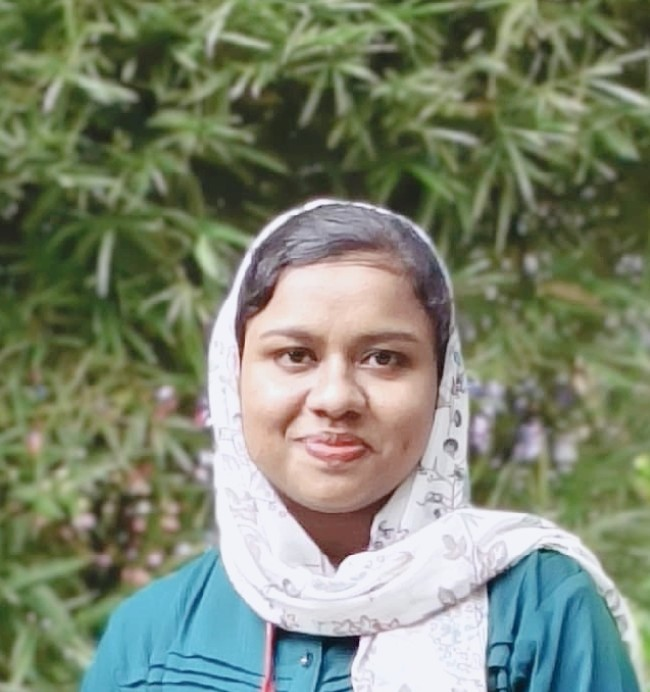

Abna Basheer
Aspiring Software Developer | Computer Science Engineering
📧 abnabasheer@gmail.com |
📞 6235147451 |
GitHub |
LinkedIn
Summary
Motivated Computer Science Engineering undergraduate with strong foundations
in Object-Oriented Programming, data structures, and problem-solving.
Proficient in Java and Python with hands-on experience through academic projects
and technical training. Seeking an entry-level Junior Software Engineer role
to grow in a fast-paced tech environment.
Education
Bachelor of Technology in Computer Science
Adi Shankara Institute of Engineering and Technology, Kalady
CGPA (up to 6th semester): 8.31
October 2022 – July 2026
Higher Secondary Education
Govt Girls HSS Perumbavoor
Mark Percentage: 97.4%
2020 – 2022
Technical Skills
Programming Languages: Java (OOP, Collections, Exception Handling),
Python (Intermediate), C (Basics)Core Concepts: Object-Oriented Programming,
Data Structures & Algorithms (Basics)Databases: DBMS, SQL (Basics)Operating Systems: Fundamentals
Technical Training & Experience
Short-Term Technical Training
(Game Development, Full-Stack, Android App Development)
Hands-on exposure to programming fundamentals and application development
Worked with UI components, logic building, and problem-solving exercises
Projects
AidBridge – Disaster Resilient Communication System
Designed an emergency communication application using mesh network concepts
Implemented offline data handling using local databases
Applied NLP techniques to classify emergency messages by severity
Footstep Power Generation System
Designed a piezoelectric-based system to generate power from human footsteps
Implemented rectification, voltage regulation, and energy storage
Workout Agent – Agentic AI Fitness System
Designed an AI-driven fitness assistant using Agentic AI and RAG
Integrated Tavily Search and ChromaDB for context-aware workout generation
Certifications
NPTEL – Demystifying Networking
NPTEL – Introduction to Wireless and Cellular Communication
Infosys Springboard – Python Programming
Infosys Springboard – Network Fundamentals
Infosys Springboard – Artificial Intelligence with Python
IBM SkillsBuild – Using Generative AI for Software Development
Infosys Springboard – Database and SQL
© 2026 Abna Basheer | Built with HTML & CSS